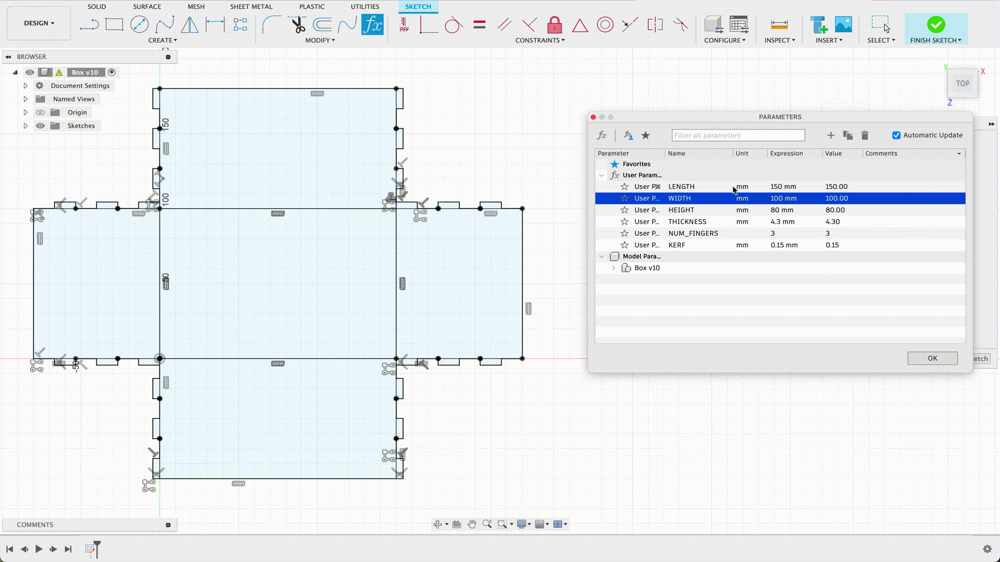
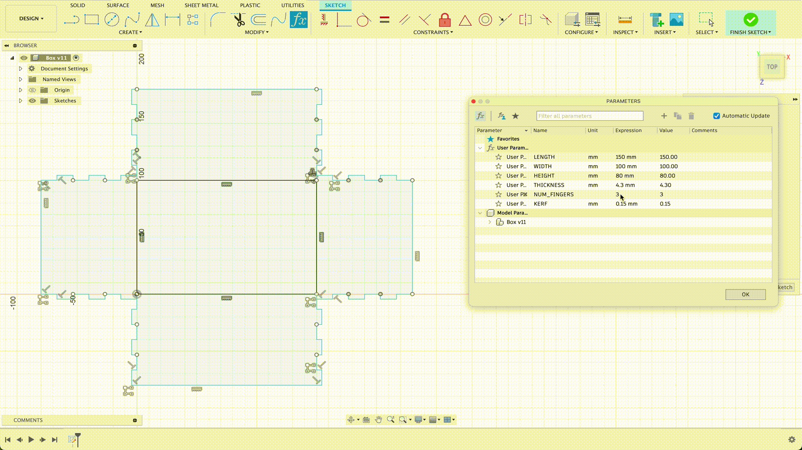

Week 2 - 2D Design and Cutting!
The Story So Far... (with the box)
The 3D model
I messed around with the 3D model for ages because I wanted to make sure I got all the parameters right. The time was definitely well spent because now I have a box net where I can easily change everything parametrically. This also makes it really easy to scale down my box and very easily update the "working prototype".
Height, width, length

The number of fingers

Attempt 1 - Small Scale
It cut well and the sides all fit together too, but the fingers did not hold because of the kerf. Doing this first cut helped me gain some confidence with the laser cutter and get comfortable with the steps involved.

Attempt 2 - Adding Kerf
I added a 0.2mm offset but I didn't get far enough to test it. The laser cutter settings were wrong so the design wasn't scoring properly. I stopped the cut early but trying to cut over it ended up making it even more of a mess. An unfortunate throwaway.
Attempt 3 - Trying again
I tried the 0.2mm offset design again and got a successful cut but it turned out that the offset was too tight for the teensie teeth to handle. The scoring also happened at a weird point in the cardboard's "wave" which made it difficult to fold the box properly.
Attempt 4 - Cutting diagonally
To fix the issue with the folding, I cut this box at a 45 degree angle to the "grain" of the cardboard and surprisingly it worked! I also dialed back the kerf offset to 0.12mm but that led to a gap that was a little too big. Having the kerf offset be parametric made adjustments so much easier

Cutting the final box
I changed the kerf offset to 0.15mm for the big box but it ended up being worse at holding than the smaller one was. A little disappointing but nothing a bit of tape couldn't fix.
I think I didn't account for bigger boxes having more "give" due to the bigger fingers, maybe I'll give 0.2mm another shot.

Practicing more modelling
Fusion 360 Tutorials
I followed 2 tutorials:
- Day 1 of Learn Fusion 360 in 30 Days for Complete Beginners!
- Day 2 of Learn Fusion 360 in 30 Days for Complete Beginners!
It was honestly really fun learning how to use these tools. I can tell that getting a handle on them early is going to help me in the future parts of my project. I was really surprised at how easy to follow the tutorials were, often I follow 15 minute youtube tutorials but they end up taking an hour
Here's what I made:
These were some of the most useful/interesting tools I learned:
- Extrude
- Spline
- Revolve
- Solid rectangular pattern
- Shell tool (this one was fun to use)
- Fillet tool (I wish it was this easy in real life)
Two "household" objects
I decided to keep it simple and use what I had around me, combining a USB dongle and a USB cable. The most interesting part about this was watching something I had measured pretty quickly with callipers appear surprisingly true to life in Fusion 360. Bobby also showed me how to use the "Joint" tool and it changed my world.